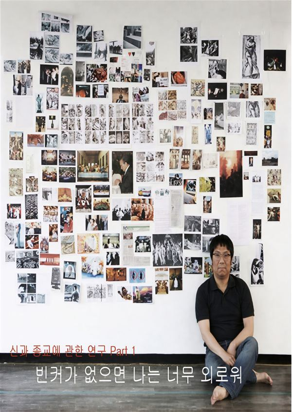

그린피그 > 아카이브 > 빈커가 없으면 나는 너무 외로워
그린피그 공동구성, 윤한솔 연출

2008.5.28 / 다원예술매개공간 2008.5.30 / 춘천 고슴도치섬 - 춘천마임축제 2008.11.6–8 / 마로니에극장 - 서울변방연극제
이전: 〈그림 같은 시절〉 | 다음: 〈충분히 애도되지 못한 슬픔〉 아카이브로 돌아가기 | 아무 작품이나
발행일 2026.11.9